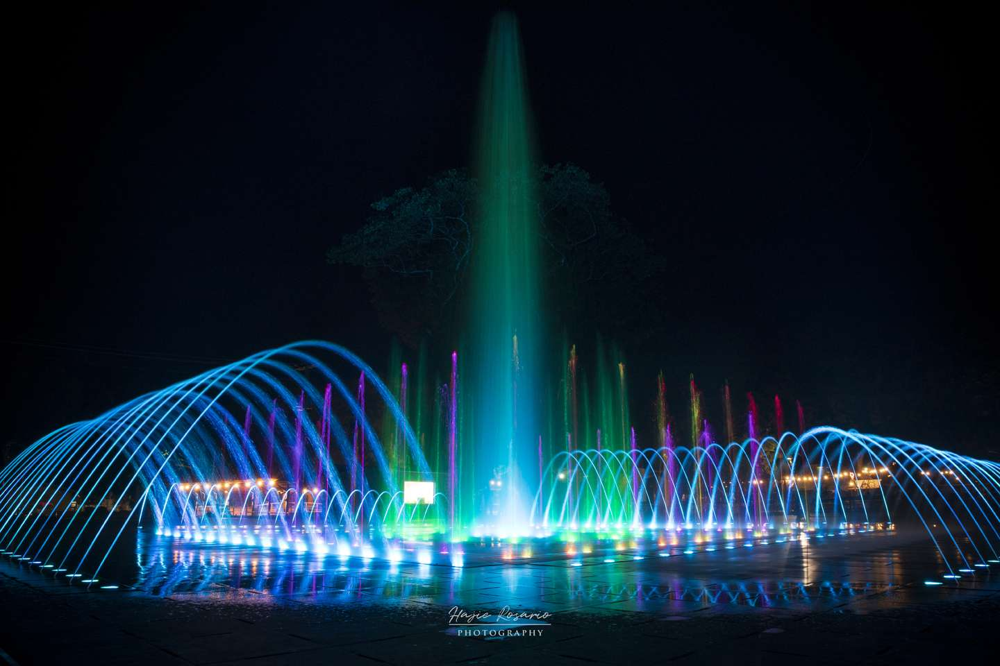
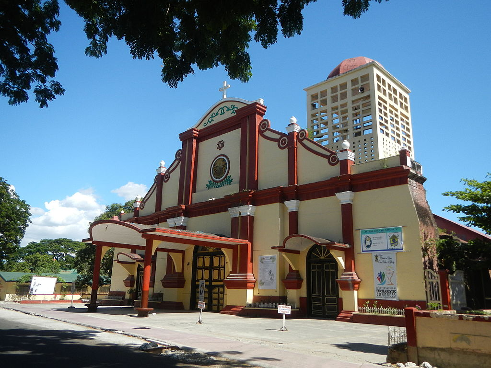
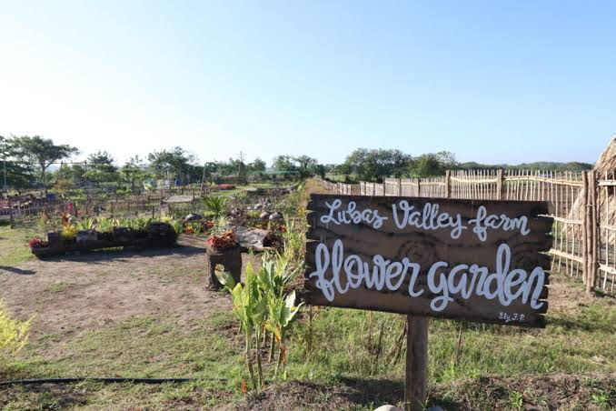
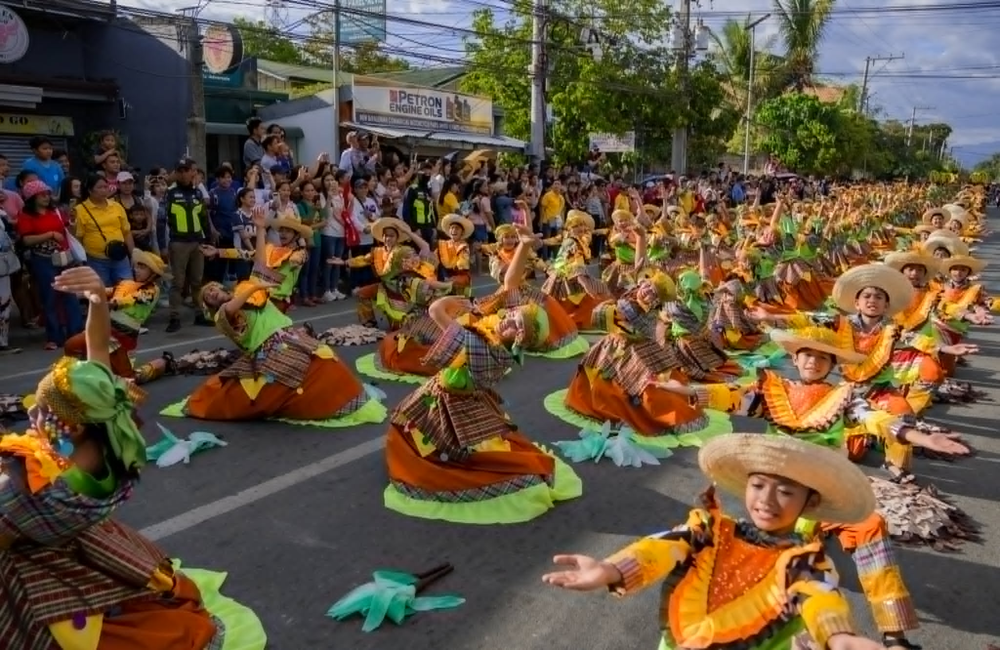
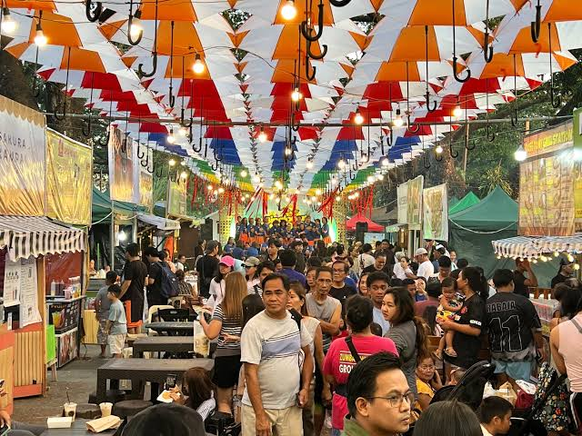
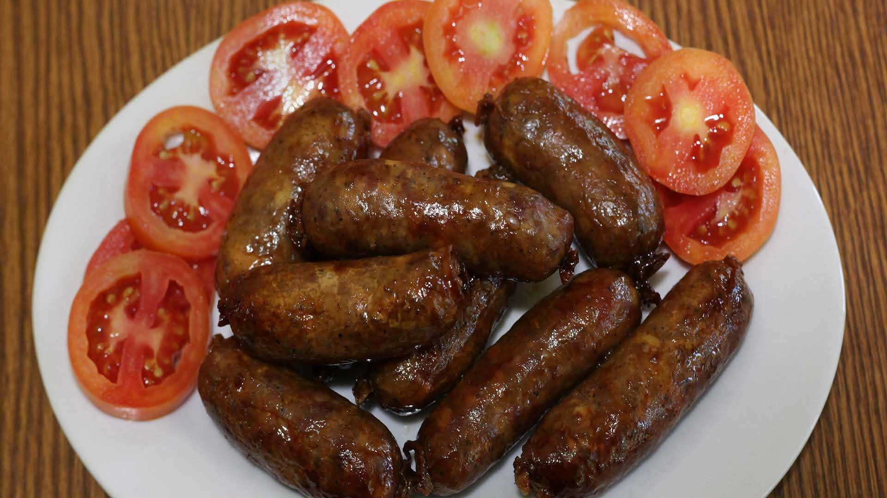
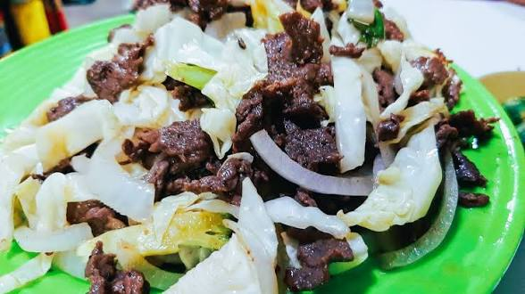
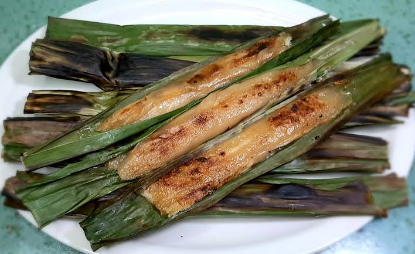

Pangasinan's Crown Jewel - Where Lush Rice Fields Meet Progressive Education and Timeless Filipino Hospitality
Nestled in the heart of Pangasinan, Binalonan is a first-class municipality renowned for its academic excellence and rich cultural heritage. Our picturesque town blends verdant rice fields with modern universities, offering visitors an authentic taste of Filipino provincial life.

The Dancing Fountain in Binalonan is a modern attraction located in the municipal area. It is one of the popular spots in the town, especially at night, because of its colorful lights and the synchronized movement of water that appears to “dance” with the music. It creates a relaxing and enjoyable atmosphere for visitors, families, and young people who want to unwind or stroll around the plaza. The fountain is also often highlighted during town events and special celebrations, making it a lively centerpiece of the community..

Sto. Niño Parish Church The Sto. Niño Parish Church has hundreds of years of history carved on its walls and serves as a physical manifestation of the Christian faith and social service of the town. Being a legacy of the architecture during the Spanish colonial rule, the church witnessed the unceasing faith of both the locals and tourists. It is located only a few meters away from the municipal hall.

Lubas Valley Farm in Binalonan, Pangasinan, is a scenic eco-tourism destination in Sitio Lubas, Brgy. Sta. Catalina, offering a sustainable getaway featuring flower gardens, the small Mt. Paldingan, and a, "4R" (reduce, reuse, recycle, recover) philosophy. It is known for its solar-powered facilities, native huts (tipi huts), a mini-forest, and Maring Lita's Food House.
World-class educational institutions open for visitors. See where Pangasinan's brightest minds shape the nation's future.

The Binalonan Fiesta (Binnalon Festival), held annually in February, features a major Civic and Float Parade showcasing cultural heritage, colorful floats, and street dancing. The 2026 celebration included street dancing on Feb 19 and the grand float parade on Feb 22, departing from near Sto. Niño Church to the Municipal Hall.
The Miss Binalonan pageant is the hallmark beauty competition of Binalonan, Pangasinan, held annually as a highlight of the Binnalon Festival. The pageant serves as a platform to showcase the intelligence, talent, and cultural pride of women representing the town's 24 barangays.

The Binalonan Summer Bazaar 2026 is a vibrant community event located at the Binalonan Plaza/Rock Garden (Poblacion), featuring local food stalls, varied goods, and lively nighttime atmosphere. It serves as a popular social hub for residents to enjoy summer vibes, music, and local products with family and friends.

Binalonan Longganisa, or "Binalongganisa," is a savory, garlicky pork sausage from Pangasinan, Philippines, known for its bold, meaty flavor and organic ingredients. Often served with sinangag (fried rice) and vinegar, this local specialty is typically sold in garlic, sweet, and spicy variants for roughly 340-360 pesos per kilo.

Pigar-pigar in Binalonan, Pangasinan, is a beloved local delicacy consisting of thinly sliced beef (or carabeef) quickly deep-fried with cabbage and topped with a generous amount of crunchy onion slices. The name comes from the Pangasinan word for "turning over," referring to the constant stirring of the meat during cooking.

Tupig in Binalonan, Pangasinan, is a popular native delicacy made from glutinous rice flour, shredded young coconut, coconut milk, and molasses or brown sugar. It is wrapped in banana leaves and grilled over charcoal, resulting in a chewy, smoky, and slightly sweet treat known as a beloved street food and pasalubong.
Binalonan, Pangasinan 2433
Philippines
+63 (75) 123-4567
tourism@binalonan.gov.ph